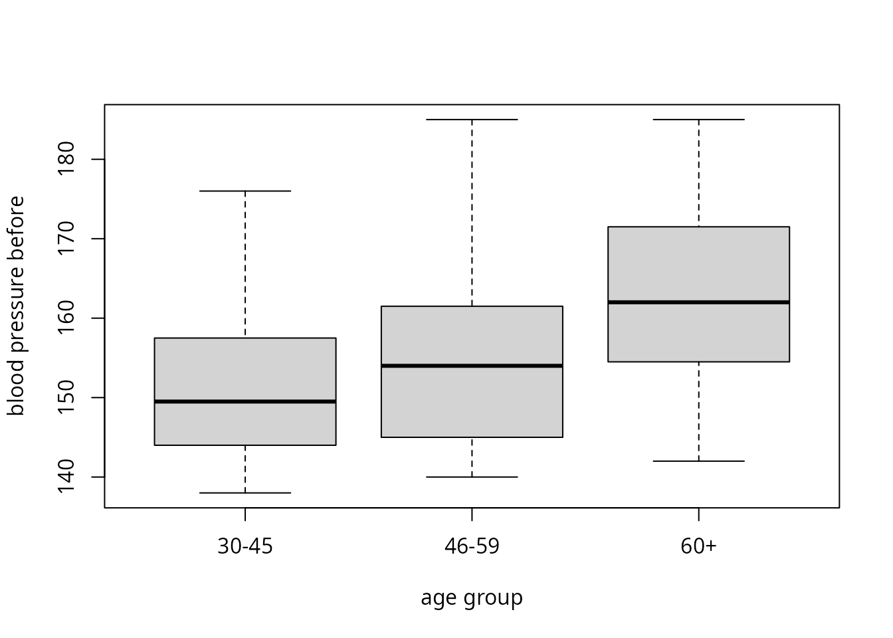

Description
This shows the output of compute_kruskal_wallis_test
from the package rwf, which runs the Kruskal-Wallis rank-sum test
(Kruskal & Wallis, 1952), the non-parametric alternative to the
one-way ANOVA. The function returns the test statistic H with its degrees of freedom and p value,
two effect sizes (rank eta-squared \eta^2_H and rank epsilon-squared \varepsilon^2_R) and, optionally, bootstrap
confidence intervals for both effect sizes. Each section gives the
formulas the function uses, computes them by hand and checks the results
against stats, coin, rcompanion,
rstatix and effectsize.
The computation of H, including the
correction for ties, is adapted from stats::kruskal.test (R
Core Team, 2026), and the effect sizes use the same formulas as
rstatix::kruskal_effsize (Kassambara, 2026) and
effectsize::rank_epsilon_squared (Ben-Shachar, Lüdecke
& Makowski, 2020).
Installation instructions for rwf can be found here
The code can be found here
Notation
There are k independent groups. Group j has n_j observations and the total sample size is n=\sum_{j=1}^{k}n_j. All n observations are pooled and ranked from 1 to n. Tied values get the mean of the ranks they span (mid-ranks). r_{ij} is the rank of observation i in group j, R_j=\sum_{i=1}^{n_j}r_{ij} is the rank sum of group j, \bar{r}_j=R_j/n_j is its mean rank and \bar{r}=(n+1)/2 is the mean of all ranks. t_1,\dots,t_m are the sizes of the m groups of tied values.
The Kruskal-Wallis test
The Kruskal-Wallis test is the rank-based alternative to the one-way ANOVA. It replaces the observations with their ranks and asks whether the mean ranks differ between groups more than they would by chance. It does not assume normality, so it suits skewed or ordinal outcomes. Its null hypothesis is that all groups come from the same distribution.
The H statistic
Without ties the statistic is
H_0=\frac{12}{n(n+1)}\sum_{j=1}^{k}\frac{R_j^2}{n_j}-3(n+1)
Ties shrink the variance of the ranks, so H_0 is divided by a correction factor:
C=1-\frac{\sum_{l=1}^{m}\left(t_l^3-t_l\right)}{n^3-n},\qquad H=\frac{H_0}{C}
Values that occur once have t_l=1 and add nothing to the sum, so C=1 when there are no ties.
Degrees of freedom and p value
Under the null hypothesis H approximately follows a chi-squared distribution with k-1 degrees of freedom:
df=k-1,\qquad p=P\left(\chi^2_{k-1}\ge H\right)
H as an ANOVA on the ranks
The tie-corrected H can also be written with sums of squares of the ranks:
H=(n-1)\,\frac{SS_{\text{between}}}{SS_{\text{total}}}=(n-1)\,\frac{\sum_{j=1}^{k}n_j\left(\bar{r}_j-\bar{r}\right)^2}{\sum_{j=1}^{k}\sum_{i=1}^{n_j}\left(r_{ij}-\bar{r}\right)^2}
So the Kruskal-Wallis test is a one-way ANOVA run on the ranks. SS_{\text{between}}/SS_{\text{total}} is the share of rank variance explained by the groups. This is where the effect sizes below come from.
When to use it and assumptions
When to use it
Use the Kruskal-Wallis test to compare two or more independent groups on one outcome when the one-way ANOVA is not a good fit:
- The outcome is ordinal, such as Likert items, rankings or grades, so means and variances are not meaningful.
- The outcome is continuous but clearly not normal within groups, for example strongly skewed reaction times or incomes, and the groups are small. With large groups the ANOVA is fairly robust to non-normality.
- There are outliers that would dominate the group means. Ranks limit the influence of any single value.
Do not use it when:
- The data are normal with equal variances. The ANOVA is then slightly more powerful. The asymptotic relative efficiency of Kruskal-Wallis against the ANOVA under normality is 3/\pi\approx0.955, so little is lost by using it (Hollander, Wolfe & Chicken, 2014).
-
The same participants are measured more than once.
Use the Friedman test for repeated measures,
compute_friedman_test, which reports Kendall’s W as its effect size. -
The groups have different spreads and the question is about
means. Use the Welch ANOVA
(
compute_one_way_test(var.equal = FALSE)). Kruskal-Wallis is not a fix for unequal variances. - The design has several factors or covariates. The test handles only one grouping variable.
With two groups the Kruskal-Wallis test is the Wilcoxon-Mann-Whitney rank-sum test. Both give the same p value when the Wilcoxon test uses the normal approximation without continuity correction:
stats::kruskal.test(bp_before ~ sex, data = df_blood_pressure)$p.value## [1] 0.004681996
stats::wilcox.test(bp_before ~ sex, data = df_blood_pressure, exact = FALSE, correct = FALSE)$p.value## [1] 0.004681996Assumptions
- Independent observations. Each observation belongs to one group only and does not depend on any other observation.
- An outcome that is at least ordinal. The values must be orderable for the ranks to mean anything.
- Similar shape and spread across groups, to compare medians. If the group distributions have the same shape and differ only in location, a significant result means the medians differ. If shapes or spreads differ, the test still detects whether some groups tend to have larger values than others (stochastic dominance), but it is no longer a test of medians. Unequal spreads with equal medians can also make it reject the null hypothesis too often.
-
Groups large enough for the chi-squared
approximation. A common rule is at least 5 observations per
group. With smaller groups use an exact or permutation p value, such as
coin::kruskal_test(distribution = coin::approximate(nresample = 10000)).
Normality and equal variances are not assumed.
The assumptions in df_blood_pressure: 40 independent
patients per age group, and an outcome measured in whole numbers. The
boxplots and the Fligner-Killeen test of equal spread check whether the
groups have a similar shape and spread:
boxplot(bp_before ~ agegrp, data = df_blood_pressure, xlab = "age group", ylab = "blood pressure before")
table(df_blood_pressure$agegrp)##
## 30-45 46-59 60+
## 40 40 40
stats::fligner.test(bp_before ~ agegrp, data = df_blood_pressure)##
## Fligner-Killeen test of homogeneity of variances
##
## data: bp_before by agegrp
## Fligner-Killeen:med chi-squared = 2.117, df = 2, p-value = 0.347Why effect sizes
A p value answers one question: if the groups did not differ, how surprising would data like these be? It does not say how large the difference is. Because H grows with the sample size, a trivial difference becomes “significant” in a large sample, and a large difference can be “non-significant” in a small one.
An effect size answers a different question: how much do the groups differ? Effect sizes are useful because they:
- measure magnitude. They separate practical importance from statistical significance.
- do not grow with n. The same population difference gives roughly the same effect size in a study of 30 people or 3,000.
- can be compared across studies. This is what meta-analysis combines.
- drive power analysis. The sample size a new study needs depends on the effect size it expects.
- are expected in reports. The APA Task Force on Statistical Inference recommends reporting effect sizes for primary outcomes (Wilkinson & Task Force on Statistical Inference, 1999; see also Lakens, 2013).
The simulation below shows this with data.
Effect sizes for Kruskal-Wallis
Rank epsilon-squared
\varepsilon^2_R=\frac{H}{\left(n^2-1\right)/(n+1)}=\frac{H}{n-1}=\frac{SS_{\text{between}}}{SS_{\text{total}}}
\varepsilon^2_R is the proportion of rank variance explained by group membership, the R^2 of a one-way ANOVA on the ranks (King, Rosopa & Minium, 2018). It lies in [0,1]. Because the groups’ mean ranks never match exactly in a sample, it is biased upwards. Under the null hypothesis E[H]\approx k-1, so E[\varepsilon^2_R]\approx(k-1)/(n-1) rather than 0.
Rank eta-squared
\eta^2_H=\frac{H-k+1}{n-k}
\eta^2_H (Tomczak & Tomczak,
2014) subtracts k-1, the expected value
of H under the null hypothesis, before
scaling. This removes most of the bias: it is close to 0 on average when
there is no effect. It can therefore be negative when
H<k-1. rwf returns the negative
value as it is, while rstatix and effectsize
truncate it at 0.
Interpretation
Multiplied by 100, both measures read as the percentage of rank variance explained by the groups. Small, medium and large are the \eta^2 benchmarks of Cohen (1988). Sawilowsky (2009) added very small, very large and huge benchmarks for Cohen’s d, and the table converts them to the \eta^2 scale with \eta^2=d^2/(d^2+4):
| Magnitude | \eta^2_H, \varepsilon^2_R | Cohen’s d |
|---|---|---|
| tiny | < 0.01 | < 0.2 |
| small | 0.01 to < 0.06 | 0.2 |
| medium | 0.06 to < 0.14 | 0.5 |
| large | 0.14 to < 0.26 | 0.8 |
| very large | 0.26 to < 0.50 | 1.2 |
| huge | ≥ 0.50 | 2.0 |
d <- c(0.2, 0.5, 0.8, 1.2, 2)
data.frame(d, eta_squared = d^2 / (d^2 + 4))## d eta_squared
## 1 0.2 0.00990099
## 2 0.5 0.05882353
## 3 0.8 0.13793103
## 4 1.2 0.26470588
## 5 2.0 0.50000000These are rough guides. What counts as a meaningful effect depends on the field and the outcome.
Data
df_blood_pressure records the blood pressure of 120
patients in three age groups of 40. The formula
bp_before ~ agegrp asks whether blood pressure before
treatment differs between age groups. Blood pressure is recorded in
whole numbers, so there are many ties.
head(df_blood_pressure)## patient sex agegrp bp_before bp_after
## 1 1 Male 30-45 143 153
## 2 2 Male 30-45 163 170
## 3 3 Male 30-45 153 168
## 4 4 Male 30-45 153 142
## 5 5 Male 30-45 146 141
## 6 6 Male 30-45 150 147##
## 30-45 46-59 60+
## 40 40 40compute_kruskal_wallis_test
result <- compute_kruskal_wallis_test(formula = form, df = df_blood_pressure)
result## formula method etasq epsilonsq H df p
## 1 bp_before ~ agegrp Kruskal-Wallis rank sum test 0.1501232 0.1644069 19.56442 2 5.644699e-05The output columns are:
| Column | Formula |
|---|---|
formula |
the model formula |
method |
the test name |
etasq |
\eta^2_H=(H-k+1)/(n-k) |
epsilonsq |
\varepsilon^2_R=H/(n-1) |
H |
tie-corrected Kruskal-Wallis statistic |
df |
k-1 |
p |
P\left(\chi^2_{k-1}\ge H\right) |
Step by step
Every quantity from the formulas above, computed by hand.
x <- df_blood_pressure$bp_before
g <- factor(df_blood_pressure$agegrp)
n <- length(x)
k <- nlevels(g)
r <- rank(x)
data.frame(n_j = tapply(r, g, length),
R_j = tapply(r, g, sum),
mean_rank = tapply(r, g, mean))## n_j R_j mean_rank
## 30-45 40 1842.0 46.0500
## 46-59 40 2237.5 55.9375
## 60+ 40 3180.5 79.5125H without ties, the tie correction and the corrected H:
R_j <- tapply(r, g, sum)
n_j <- tapply(r, g, length)
H_0 <- 12 / (n * (n + 1)) * sum(R_j^2 / n_j) - 3 * (n + 1)
t_l <- table(x)
C <- 1 - sum(t_l^3 - t_l) / (n^3 - n)
H <- H_0 / C
data.frame(H_0, C, H)## H_0 C H
## 1 19.5403 0.9987673 19.56442The same H from the sums of squares of the ranks:
ss_between <- sum(n_j * (tapply(r, g, mean) - mean(r))^2)
ss_total <- sum((r - mean(r))^2)
(n - 1) * ss_between / ss_total## [1] 19.56442Degrees of freedom, p value and effect sizes:
by_hand <- data.frame(etasq = (H - k + 1) / (n - k),
epsilonsq = H / (n - 1),
H = H,
df = k - 1,
p = pchisq(H, k - 1, lower.tail = FALSE))
by_hand## etasq epsilonsq H df p
## 1 0.1501232 0.1644069 19.56442 2 5.644699e-05## [1] TRUEChecks against other packages
stats and coin
stats::kruskal.test and coin::kruskal_test
give the same H, degrees of freedom and
p value:
stats::kruskal.test(formula = form, data = df_blood_pressure)##
## Kruskal-Wallis rank sum test
##
## data: bp_before by agegrp
## Kruskal-Wallis chi-squared = 19.564, df = 2, p-value = 5.645e-05
coin::kruskal_test(bp_before ~ factor(agegrp), data = df_blood_pressure)##
## Asymptotic Kruskal-Wallis Test
##
## data: bp_before by factor(agegrp) (30-45, 46-59, 60+)
## chi-squared = 19.564, df = 2, p-value = 5.645e-05ANOVA on the ranks
\varepsilon^2_R is the R^2 of a linear model of the ranks on the groups:
## [1] 0.1644069
result$epsilonsq## [1] 0.1644069rcompanion, rstatix and effectsize
rcompanion::epsilonSquared,
rstatix::kruskal_effsize and
effectsize::rank_epsilon_squared compute \varepsilon^2_R.
rstatix::kruskal_effsize (its default method) and
effectsize::rank_eta_squared compute \eta^2_H. The confidence intervals are
bootstrapped, so they change slightly from run to run. The confidence intervals section compares
them with the intervals from rwf.
rcompanion::epsilonSquared(x = df_blood_pressure$bp_before, g = df_blood_pressure$agegrp,
group = "row", ci = TRUE, conf = 0.95, type = "perc", R = 1000, digits = 3)## epsilon.squared lower.ci upper.ci
## 1 0.164 0.0646 0.314
rstatix::kruskal_effsize(df_blood_pressure, form, ci = TRUE, conf.level = 0.95, ci.type = "perc", nboot = 100)## # A tibble: 1 × 7
## .y. n effsize conf.low conf.high method magnitude
## * <chr> <int> <dbl> <dbl> <dbl> <chr> <ord>
## 1 bp_before 120 0.150 0.05 0.28 eta2[H] large
rstatix::kruskal_effsize(df_blood_pressure, form, method = "epsilon2")## # A tibble: 1 × 5
## .y. n effsize method magnitude
## * <chr> <int> <dbl> <chr> <ord>
## 1 bp_before 120 0.164 epsilon2 large
effectsize::rank_epsilon_squared(form, data = df_blood_pressure)## Epsilon2 (rank) | 95% CI
## ------------------------------
## 0.16 | [0.09, 1.00]
##
## - One-sided CIs: upper bound fixed at [1.00].
effectsize::rank_eta_squared(form, data = df_blood_pressure)## Eta2 (rank) | 95% CI
## --------------------------
## 0.15 | [0.06, 1.00]
##
## - One-sided CIs: upper bound fixed at [1.00].A test function
check_kruskal_wallis puts each rwf value next to the
value from the other packages and returns the difference.
rstatix and effectsize truncate \eta^2_H at 0, so the rwf value is truncated
in the same way before the comparison.
check_kruskal_wallis <- function(formula, df) {
y <- all.vars(formula)[1]
g <- all.vars(formula)[2]
df <- stats::na.omit(data.frame(y = df[[y]], g = factor(df[[g]])))
rwf <- compute_kruskal_wallis_test(formula = y ~ g, df = df)
kw <- stats::kruskal.test(y ~ g, data = df)
rwf_etasq <- max(0, min(1, rwf$etasq))
comparison <- data.frame(
statistic = c("H", "H", "df", "p", "epsilonsq", "epsilonsq", "epsilonsq", "epsilonsq", "etasq", "etasq"),
package = c("stats::kruskal.test", "coin::kruskal_test", "stats::kruskal.test", "stats::kruskal.test",
"lm on ranks", "rcompanion::epsilonSquared", "rstatix::kruskal_effsize", "effectsize::rank_epsilon_squared",
"rstatix::kruskal_effsize", "effectsize::rank_eta_squared"),
rwf = c(rwf$H, rwf$H, rwf$df, rwf$p,
rwf$epsilonsq, rwf$epsilonsq, rwf$epsilonsq, rwf$epsilonsq,
rwf_etasq, rwf_etasq),
other = c(unname(kw$statistic),
unname(coin::statistic(coin::kruskal_test(y ~ g, data = df))),
unname(kw$parameter),
kw$p.value,
summary(lm(rank(y) ~ g, data = df))$r.squared,
unname(rcompanion::epsilonSquared(x = df$y, g = df$g, digits = 15)),
rstatix::kruskal_effsize(df, y ~ g, method = "epsilon2")$effsize,
effectsize::rank_epsilon_squared(y ~ g, data = df, ci = NULL)$rank_epsilon_squared,
rstatix::kruskal_effsize(df, y ~ g)$effsize,
effectsize::rank_eta_squared(y ~ g, data = df, ci = NULL)$rank_eta_squared))
comparison$difference <- comparison$rwf - comparison$other
comparison
}
check_kruskal_wallis(formula = form, df = df_blood_pressure)## statistic package rwf other difference
## 1 H stats::kruskal.test 1.956442e+01 1.956442e+01 0.000000e+00
## 2 H coin::kruskal_test 1.956442e+01 1.956442e+01 1.776357e-14
## 3 df stats::kruskal.test 2.000000e+00 2.000000e+00 0.000000e+00
## 4 p stats::kruskal.test 5.644699e-05 5.644699e-05 0.000000e+00
## 5 epsilonsq lm on ranks 1.644069e-01 1.644069e-01 1.665335e-16
## 6 epsilonsq rcompanion::epsilonSquared 1.644069e-01 1.644069e-01 1.110223e-16
## 7 epsilonsq rstatix::kruskal_effsize 1.644069e-01 1.644069e-01 0.000000e+00
## 8 epsilonsq effectsize::rank_epsilon_squared 1.644069e-01 1.644069e-01 0.000000e+00
## 9 etasq rstatix::kruskal_effsize 1.501232e-01 1.501232e-01 0.000000e+00
## 10 etasq effectsize::rank_eta_squared 1.501232e-01 1.501232e-01 0.000000e+00The same check on six datasets with different numbers of groups,
sample sizes and amounts of ties. max_abs_difference is the
largest absolute difference across all the comparisons for that
dataset:
datasets <- list(
list(formula = bp_before ~ agegrp, df = df_blood_pressure),
list(formula = qsec ~ cyl, df = mtcars),
list(formula = weight ~ group, df = PlantGrowth),
list(formula = count ~ spray, df = InsectSprays),
list(formula = weight ~ feed, df = chickwts),
list(formula = len ~ dose, df = ToothGrowth)
)
do.call(rbind, lapply(datasets, function(d) {
rwf <- compute_kruskal_wallis_test(formula = d$formula, df = d$df)
check <- check_kruskal_wallis(formula = d$formula, df = d$df)
data.frame(formula = deparse(d$formula),
n = nrow(d$df),
k = rwf$df + 1,
H = rwf$H,
etasq = rwf$etasq,
epsilonsq = rwf$epsilonsq,
max_abs_difference = max(abs(check$difference)))
}))## formula n k H etasq epsilonsq max_abs_difference
## 1 bp_before ~ agegrp 120 3 19.564417 0.1501232 0.1644069 1.776357e-14
## 2 qsec ~ cyl 32 3 10.155158 0.2812123 0.3275857 5.329071e-15
## 3 weight ~ group 30 3 7.988229 0.2217862 0.2754562 1.421085e-14
## 4 count ~ spray 72 6 54.691345 0.7528992 0.7703006 2.220446e-16
## 5 weight ~ feed 71 6 37.342718 0.4975803 0.5334674 2.131628e-14
## 6 len ~ dose 60 3 40.668935 0.6784024 0.6893040 7.105427e-15Confidence intervals
With ci = TRUE the function adds percentile bootstrap
confidence intervals for both effect sizes. It draws nboot
samples of n rows with replacement and
computes \eta^2_H and \varepsilon^2_R in each, giving \hat{\theta}^{*}_1,\dots,\hat{\theta}^{*}_B.
The interval is
\left[\hat{\theta}^{*}_{(\alpha/2)},\ \hat{\theta}^{*}_{(1-\alpha/2)}\right],\qquad \alpha=1-\texttt{conf.level}
where \hat{\theta}^{*}_{(q)} is the
q quantile of the bootstrap estimates.
Unlike rstatix and effectsize, rwf does not
truncate the bootstrap values of \eta^2_H at 0, so its lower limit can be
negative when the effect is small.
set.seed(1)
compute_kruskal_wallis_test(formula = form, df = df_blood_pressure, ci = TRUE, conf.level = 0.95, nboot = 5000)## formula method etasq etasq_lower etasq_upper epsilonsq epsilonsq_lower epsilonsq_upper H df p
## 1 bp_before ~ agegrp Kruskal-Wallis rank sum test 0.1501232 0.05272121 0.2940747 0.1644069 0.06864186 0.305939 19.56442 2 5.644699e-05The other packages use the same percentile method. Each bootstrap
draws different resamples, so the limits agree only to about two
decimals, and they get closer as nboot grows:
set.seed(1)
rwf <- compute_kruskal_wallis_test(formula = form, df = df_blood_pressure, ci = TRUE, nboot = 5000)
set.seed(1)
rcompanion_epsilonsq <- rcompanion::epsilonSquared(x = df_blood_pressure$bp_before, g = df_blood_pressure$agegrp,
ci = TRUE, type = "perc", R = 5000, digits = 15)
set.seed(1)
rstatix_etasq <- rstatix::kruskal_effsize(df_blood_pressure, form, ci = TRUE, ci.type = "perc", nboot = 5000)
set.seed(1)
effectsize_epsilonsq <- effectsize::rank_epsilon_squared(form, data = df_blood_pressure, alternative = "two.sided", iterations = 5000)
set.seed(1)
effectsize_etasq <- effectsize::rank_eta_squared(form, data = df_blood_pressure, alternative = "two.sided", iterations = 5000)
data.frame(
statistic = c("etasq", "etasq", "etasq", "epsilonsq", "epsilonsq", "epsilonsq"),
package = c("rwf", "rstatix::kruskal_effsize", "effectsize::rank_eta_squared",
"rwf", "rcompanion::epsilonSquared", "effectsize::rank_epsilon_squared"),
estimate = c(rwf$etasq, rstatix_etasq$effsize, effectsize_etasq$rank_eta_squared,
rwf$epsilonsq, rcompanion_epsilonsq$epsilon.squared, effectsize_epsilonsq$rank_epsilon_squared),
lower = c(rwf$etasq_lower, rstatix_etasq$conf.low, effectsize_etasq$CI_low,
rwf$epsilonsq_lower, rcompanion_epsilonsq$lower.ci, effectsize_epsilonsq$CI_low),
upper = c(rwf$etasq_upper, rstatix_etasq$conf.high, effectsize_etasq$CI_high,
rwf$epsilonsq_upper, rcompanion_epsilonsq$upper.ci, effectsize_epsilonsq$CI_high))## statistic package estimate lower upper
## 1 etasq rwf 0.1501232 0.05272121 0.2940747
## 2 etasq rstatix::kruskal_effsize 0.1501232 0.05000000 0.3000000
## 3 etasq effectsize::rank_eta_squared 0.1501232 0.05316455 0.2929897
## 4 epsilonsq rwf 0.1644069 0.06864186 0.3059390
## 5 epsilonsq rcompanion::epsilonSquared 0.1644069 0.06712741 0.3077967
## 6 epsilonsq effectsize::rank_epsilon_squared 0.1644069 0.06907775 0.3048722rstatix rounds its limits to two decimals.
effectsize reports one-sided intervals by default, so
alternative = "two.sided" is set here.
p values shrink, effect sizes do not
Three groups are drawn from normal distributions whose means differ by 0.3 standard deviations, with 10 to 1,000 observations per group. The population effect is the same in every row. As the sample grows, H grows and the p value drops towards 0, while \eta^2_H and \varepsilon^2_R settle around the same value:
set.seed(1)
do.call(rbind, lapply(c(10, 30, 100, 300, 1000), function(n_per_group) {
sim <- data.frame(group = rep(c("a", "b", "c"), each = n_per_group),
score = rnorm(3 * n_per_group, mean = rep(c(0, 0.3, 0.6), each = n_per_group)))
cbind(n_per_group, compute_kruskal_wallis_test(formula = score ~ group, df = sim)[, c("H", "p", "etasq", "epsilonsq")])
}))## n_per_group H p etasq epsilonsq
## 1 10 1.643871 4.395800e-01 -0.01318996 0.05668521
## 2 30 5.518632 6.333506e-02 0.04044405 0.06200711
## 3 100 21.494769 2.150157e-05 0.06563895 0.07188886
## 4 300 67.447370 2.259382e-15 0.07296251 0.07502488
## 5 1000 161.564928 8.253187e-36 0.05324155 0.05387293A p value from one study says little about the size of the effect. The effect size does.
Bias of epsilon-squared
When there is no effect at all, the average \varepsilon^2_R is close to (k-1)/(n-1), while the average \eta^2_H is close to 0. With k=3 groups of 10 the bias is 2/29\approx0.069, which is already above the “medium” benchmark:
set.seed(1)
null_effects <- t(replicate(2000, {
sim <- data.frame(group = rep(c("a", "b", "c"), each = 10), score = rnorm(30))
unlist(compute_kruskal_wallis_test(formula = score ~ group, df = sim)[, c("etasq", "epsilonsq")])
}))
data.frame(mean_etasq = mean(null_effects[, "etasq"]),
mean_epsilonsq = mean(null_effects[, "epsilonsq"]),
expected_epsilonsq = (3 - 1) / (30 - 1),
proportion_negative_etasq = mean(null_effects[, "etasq"] < 0))## mean_etasq mean_epsilonsq expected_epsilonsq proportion_negative_etasq
## 1 -0.0008525209 0.06817179 0.06896552 0.625With small samples, report \eta^2_H or remember that \varepsilon^2_R is inflated by roughly (k-1)/(n-1).
Negative eta-squared
If the groups have identical rank distributions, H=0 and \eta^2_H=(0-k+1)/(n-k) is negative. rwf
returns the negative value, while rstatix and
effectsize report 0:
identical_groups <- data.frame(group = rep(c("a", "b", "c"), each = 5), score = rep(1:5, times = 3))
compute_kruskal_wallis_test(formula = score ~ group, df = identical_groups)## formula method etasq epsilonsq H df p
## 1 score ~ group Kruskal-Wallis rank sum test -0.1666667 0 0 2 1
rstatix::kruskal_effsize(identical_groups, score ~ group)## # A tibble: 1 × 5
## .y. n effsize method magnitude
## * <chr> <int> <dbl> <chr> <ord>
## 1 score 15 0 eta2[H] small
effectsize::rank_eta_squared(score ~ group, data = identical_groups, ci = NULL)## Eta2 (rank)
## -----------
## 0A negative value means the groups differ less than expected by chance. Report it as 0 or as it is, but do not read it as a negative effect.
Missing values
compute_kruskal_wallis_test removes rows with a missing
value in the outcome or the grouping variable before the test, as
stats::kruskal.test does. Missing values in other columns
of df are ignored. Two blood pressure values are set to
missing here, and both functions use the remaining 118 rows:
df_missing <- df_blood_pressure
df_missing$bp_before[c(1, 50)] <- NA
df_missing$bp_after[2] <- NA
compute_kruskal_wallis_test(formula = form, df = df_missing)## formula method etasq epsilonsq H df p
## 1 bp_before ~ agegrp Kruskal-Wallis rank sum test 0.1374489 0.1521934 17.80663 2 0.0001359376
stats::kruskal.test(formula = form, data = df_missing)##
## Kruskal-Wallis rank sum test
##
## data: bp_before by agegrp
## Kruskal-Wallis chi-squared = 17.807, df = 2, p-value = 0.0001359
check_kruskal_wallis(formula = form, df = df_missing)## statistic package rwf other difference
## 1 H stats::kruskal.test 1.780663e+01 1.780663e+01 0.000000e+00
## 2 H coin::kruskal_test 1.780663e+01 1.780663e+01 -7.105427e-15
## 3 df stats::kruskal.test 2.000000e+00 2.000000e+00 0.000000e+00
## 4 p stats::kruskal.test 1.359376e-04 1.359376e-04 0.000000e+00
## 5 epsilonsq lm on ranks 1.521934e-01 1.521934e-01 1.110223e-16
## 6 epsilonsq rcompanion::epsilonSquared 1.521934e-01 1.521934e-01 -2.498002e-16
## 7 epsilonsq rstatix::kruskal_effsize 1.521934e-01 1.521934e-01 0.000000e+00
## 8 epsilonsq effectsize::rank_epsilon_squared 1.521934e-01 1.521934e-01 0.000000e+00
## 9 etasq rstatix::kruskal_effsize 1.374489e-01 1.374489e-01 0.000000e+00
## 10 etasq effectsize::rank_eta_squared 1.374489e-01 1.374489e-01 0.000000e+00References
Ben-Shachar, M. S., Lüdecke, D., & Makowski, D. (2020). effectsize: Estimation of effect size indices and standardized parameters. Journal of Open Source Software, 5(56), 2815. https://doi.org/10.21105/joss.02815
Cohen, J. (1988). Statistical power analysis for the behavioral sciences (2nd ed.). Lawrence Erlbaum Associates.
Dunn, O. J. (1964). Multiple comparisons using rank sums. Technometrics, 6(3), 241–252. https://doi.org/10.1080/00401706.1964.10490181
Hollander, M., Wolfe, D. A., & Chicken, E. (2014). Nonparametric statistical methods (3rd ed.). Wiley.
Kassambara, A. (2026). rstatix: Pipe-friendly framework for basic statistical tests (R package version 1.1.0). https://doi.org/10.32614/CRAN.package.rstatix
King, B. M., Rosopa, P. J., & Minium, E. W. (2018). Statistical reasoning in the behavioral sciences (7th ed.). Wiley.
Kruskal, W. H., & Wallis, W. A. (1952). Use of ranks in one-criterion variance analysis. Journal of the American Statistical Association, 47(260), 583–621. https://doi.org/10.1080/01621459.1952.10483441
Lakens, D. (2013). Calculating and reporting effect sizes to facilitate cumulative science: A practical primer for t-tests and ANOVAs. Frontiers in Psychology, 4, 863. https://doi.org/10.3389/fpsyg.2013.00863
R Core Team. (2026). R: A language and environment for statistical computing. R Foundation for Statistical Computing, Vienna, Austria. https://doi.org/10.32614/R.manuals
Sawilowsky, S. S. (2009). New effect size rules of thumb. Journal of Modern Applied Statistical Methods, 8(2), 597–599. https://doi.org/10.22237/jmasm/1257035100
Tomczak, M., & Tomczak, E. (2014). The need to report effect size estimates revisited. An overview of some recommended measures of effect size. Trends in Sport Sciences, 1(21), 19–25.
Wilkinson, L., & Task Force on Statistical Inference. (1999). Statistical methods in psychology journals: Guidelines and explanations. American Psychologist, 54(8), 594–604. https://doi.org/10.1037/0003-066X.54.8.594